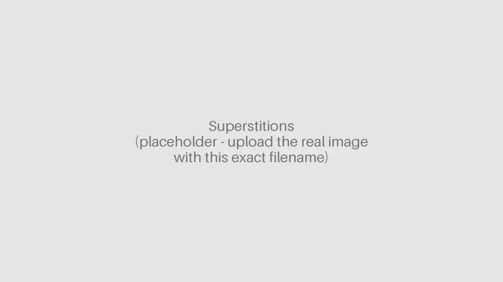
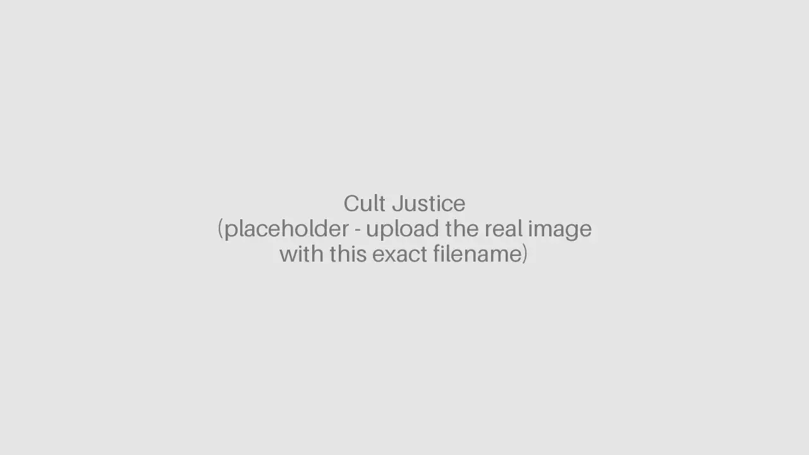

Unveiled: Surviving La Luz del Mundo | HBO | Field Producer | 2022
Nominated for an Emmy Award (Outstanding Crime and Justice Documentary)
Unveiled: Surviving La Luz del Mundo | HBO | Field Producer | 2022
Nominated for an Emmy Award (Outstanding Crime and Justice Documentary)
Invisible Costs of Taiwan’s Chip Boom | TaiwanPlus | Director & Producer | 2026

Superstitions | TaiwanPlus | Executive Producer | 2025

兩岸第一對：Ryan與Righ的同婚之路｜Deutsche Welle 德國之聲 ｜Director ｜2025

The Trials of Kyle Rittenhouse | Law&Crime Network | Producer | 2024

Cult Justice | HULU | Producer | 2023

Killer Cases | A&E | Producer | 2022-2023